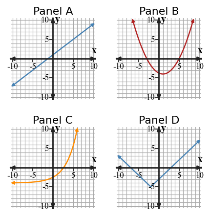
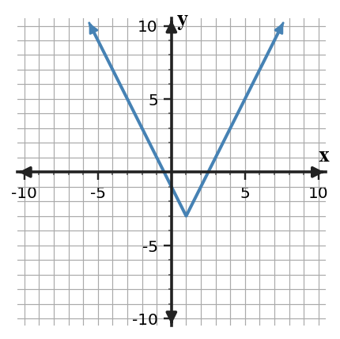
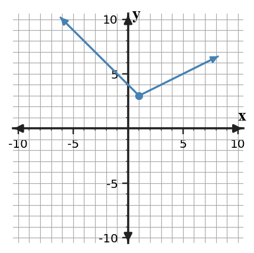
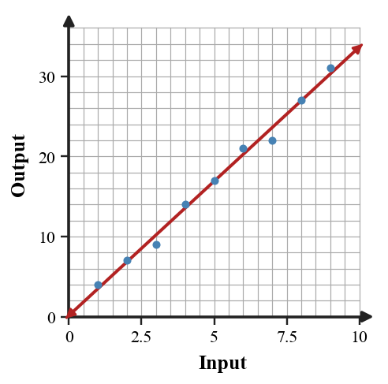
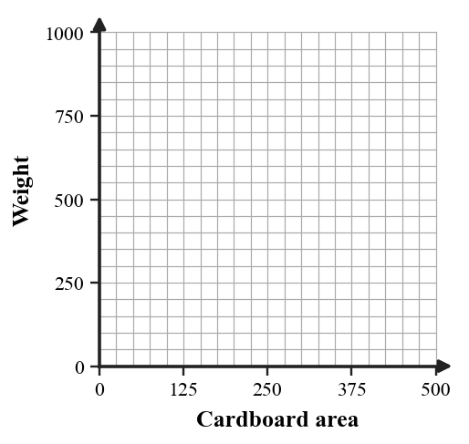
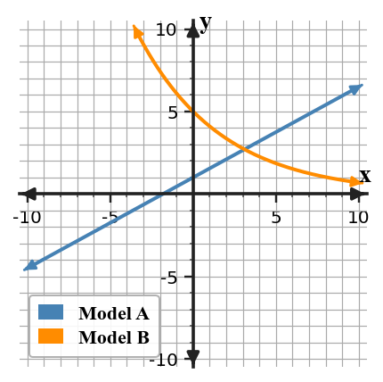

Unit 8 Progress Tracker
Students will analyze, model, and interpret situations using linear, quadratic, exponential, absolute value, and piecewise function representations to select appropriate models and support conclusions.
I need more instruction and practice.
I understand most of it but need more practice.
I can do this independently.
I can teach it.
Progress Tracking
My Progress
Evidence / Notes
My Progress
Evidence / Notes
My Progress
Evidence / Notes
My Progress
Evidence / Notes
Learning Ladder
| Rung | I Can Statement | DOK | Level |
|---|---|---|---|
| 8 | I can design a short modeling response that selects, analyzes, and revises a function model using data and context constraints. | DOK 4 | Above |
| 7 | I can construct a synthesis task that connects multiple function families and representations to solve a complex problem. | DOK 4 | Above |
| 6 | I can assess competing models by using patterns, features, residual observations, and contextual limits. | DOK 3 | Essential |
| 5 | I can determine which representation best reveals the needed features for a modeling or analysis question. | DOK 3 | Essential |
| 4 | I can apply transformations, key features, and domain restrictions across function families. | DOK 2 | Essential |
| 3 | I can construct equations and graphs from tables, features, and situations. | DOK 2 | Essential |
| 2 | I can use first differences, second differences, ratios, vertices, intercepts, and intervals to classify function behavior. | DOK 1 | Essential |
| 1 | I can apply function-family vocabulary to equations, graphs, tables, and contexts. | DOK 1 | Essential |
Student Goal Setting
Unit 8 Practice by Depth of Knowledge
Format: 3-5 minute warm-up, vocabulary check, representation recognition, or exit ticket
Purpose: DOK 1 reveals whether students can access the basic vocabulary, features, and pattern clues needed before selecting or building models across function families.
Assessment Ideas
- Model Family Clues Can Be Assessed After Section 8.1 - Classify linear, quadratic, and exponential models from tables, equations, and graphs; name difference, ratio, direction, and opening clues; connect evidence to growth, decay, or family language.
- Transformation Basics Can Be Assessed After Section 8.2 - Use transformation language across quadratic, absolute value, and exponential functions; identify shifted vertices, reflected or stretched graphs, and changed intercept or asymptote features; connect moved key points to parent functions.
- Absolute Value Basics Can Be Assessed After Section 8.3 - Solve basic absolute value equations and inequalities; check possible solutions or no-solution cases; identify vertices, extrema, intercepts, and number-line intervals.
- Modeling Vocabulary Can Be Assessed After Section 8.4 - Interpret modeling vocabulary for function families, associations, residuals, domain, interpolation, and extrapolation; connect representation advantages to model meaning; identify inputs and outputs in context.
DOK 1 performance shows whether students can read the foundational clues needed for Unit 8 synthesis: function-family evidence, transformation language, absolute value features, and modeling vocabulary. The data separates vocabulary or recognition gaps from later model-selection and justification errors.
For each table, identify the function behavior as linear, quadratic, exponential, or neither. State the evidence you used.
| $x$ | 0 | 1 | 2 | 3 |
|---|---|---|---|---|
| Table A | 4 | 9 | 14 | 19 |
| Table B | 3 | 6 | 12 | 24 |
| Table C | 1 | 4 | 9 | 16 |
Use the vocabulary list to complete each statement: vertex, intercept, constant ratio, interval, residual.
- A quadratic graph has a turning point called the __________.
- A value where a graph crosses an axis is an __________.
- Exponential tables can be identified by a __________.
- A piecewise rule uses different formulas on different __________.
Use the graph to name one feature that would help classify each panel. Do not only name the family; give evidence from shape or behavior.

Classify each equation by function family.
- $y=5x-2$
- $y=3(1.2)^x$
- $y=(x-4)^2+1$
- $y=2|x+3|-5$
Read the graph. Estimate the vertex and say whether the function has a minimum or maximum.

Which representation gives the clearest evidence of a constant rate of change: a table of first differences, a graph with a turning point, or an equation with a constant multiplier? Explain briefly.
Find the first differences, second differences, and ratios when they are useful. Then choose the strongest evidence for the function family.
| $x$ | 0 | 1 | 2 | 3 | 4 |
|---|---|---|---|---|---|
| $y$ | 2 | 5 | 10 | 17 | 26 |
Use the piecewise graph to estimate the output at $x=2$ and describe how the rate changes after the breakpoint.

Format: Mini-quiz, graph/table task, matching task, partner check, or short written task
Purpose: DOK 2 reveals whether students can connect representations and carry out the procedures needed to build, transform, and use models.
Assessment Ideas
- Select a Model Can Be Assessed After Section 8.1 - Select a linear, quadratic, or exponential model from data, graphs, and contexts; justify with differences, ratios, or graph features; write possible equations when a starting value and pattern are given.
- Transform and Graph Can Be Assessed After Section 8.2 - Write transformed equations for quadratic, absolute value, and exponential parent functions; graph or infer key features from transformations; connect vertices, asymptotes, and parent functions to the transformed rule.
- Absolute Value and Piecewise Models Can Be Assessed After Section 8.3 - Model absolute value and piecewise situations by solving equations and writing distance-from-target rules; evaluate interval-based functions at selected inputs; connect vertices, boundaries, and rule changes to the context.
- Modeling with Data Can Be Assessed After Section 8.4 - Analyze data-based models using scatterplots, linear equations, intersections, and vertex-form constraints; make predictions within reasonable domains; explain interpolation, extrapolation, and stretch-factor reasoning.
DOK 2 performance shows whether students can apply Unit 8 tools across representations: choosing model families from evidence, writing and graphing transformations, building absolute value or piecewise models, and using data models for predictions. The data highlights whether errors come from representation setup, calculation, or context interpretation.
A table begins at 6 and doubles each step. Construct an equation, make a table for $x=0,1,2,3,4$, and describe the graph shape.
Graph the transformed quadratic $g(x)=(x-3)^2-4$ on the blank coordinate plane. Label the vertex and at least two matching points.

Use the graph to write a possible absolute value equation in transformation form. Identify the vertex and the vertical stretch or compression.
The table shows a data pattern. Choose a linear, quadratic, or exponential model and write a possible equation.
| $x$ | 0 | 1 | 2 | 3 |
|---|---|---|---|---|
| $y$ | 12 | 18 | 27 | 40.5 |
Use the scatter plot to estimate a line of best fit. Interpret the slope and intercept in context.

Use the blank axes and data table to make a scatterplot. Then decide whether a linear model is reasonable.
| Cardboard area | 50 | 150 | 250 | 350 | 450 |
|---|---|---|---|---|---|
| Weight | 95 | 230 | 410 | 610 | 870 |

Write a piecewise rule for a delivery fee that costs 4 dollars for the first 3 miles and then increases by 1.50 dollars per mile after that. State the domain intervals.
Compare the two candidate models shown. Estimate one input where the outputs are close, then describe which model is larger before and after that point.

Format: Constructed response, model critique, strategy comparison, representation analysis, or discourse prompt
Purpose: DOK 3 reveals whether students can reason about why a model, representation, or strategy is appropriate rather than only carrying out a procedure.
Assessment Ideas
- Critique Model Choice Can Be Assessed After Section 8.1 - Critique model-choice claims and representation mismatches; use differences, ratios, equations, tables, and scatterplots as evidence; revise incorrect values or justify whether a model is reasonable for the domain.
- Critique Transformations Can Be Assessed After Section 8.2 - Evaluate transformation claims across function families; compare equations, graphs, and moved key points; revise imprecise language into accurate descriptions of shifts, stretches, and reflections.
- Reason with Absolute Value Can Be Assessed After Section 8.3 - Develop reasoning for absolute value and piecewise models; repair mismatched tables, compare solution methods, and test symmetry or rate conditions; interpret domain and vertex meaning in context.
- Analyze Model Limits Can Be Assessed After Section 8.4 - Analyze model limits using domain, trend, residual, and representation evidence; compare tables, scatterplots, graphing, and algebraic methods; judge when extrapolated predictions should or should not be trusted.
DOK 3 performance shows whether students can use evidence to critique and revise reasoning, not just name or build models. These tasks reveal how well students defend model choices, transformation claims, absolute value or piecewise decisions, and the limits of predictions from data.
A student claims the table is exponential because the outputs increase faster each time. Critique the claim using differences and ratios, then choose a better model family.
| $x$ | 0 | 1 | 2 | 3 | 4 |
|---|---|---|---|---|---|
| $y$ | 2 | 5 | 10 | 17 | 26 |
The graph and equation are supposed to match: $y=|x-2|+1$. Analyze whether they match. If not, revise the equation or describe the graph correctly.
Two students choose different models for the same situation: Student A chooses linear because the values increase, and Student B chooses quadratic because the change itself increases. Use the table to decide who has stronger evidence.
| Time | 0 | 1 | 2 | 3 | 4 |
|---|---|---|---|---|---|
| Distance | 0 | 3 | 12 | 27 | 48 |
Use the scatter plot to explain why a model might be useful for prediction but still imperfect. Include one residual-style observation about overprediction or underprediction.
A context says a runner travels away from a checkpoint, turns around, and returns. Explain why an absolute value or piecewise model may be more appropriate than a single linear model.
Compare the graph, table, and equation. Decide which representation best reveals the requested feature: intercepts, vertex, rate of change, or long-term behavior. Justify two choices.
| Question | Best representation | Reason |
|---|---|---|
| Find the turning point | _____ | _____ |
| Estimate a prediction between data values | _____ | _____ |
| Identify repeated multiplication | _____ | _____ |
The piecewise graph is used to model a delivery trip. Explain what the breakpoint could mean, why one rate before the breakpoint differs from the other rate, and one limitation of the model.
A student says the transformed function $g(x)=2f(x-3)+4$ only moves the graph right 3 and up 4. Critique the statement and describe the role of the factor 2.
Format: Brief performance task, modeling task, critique-and-revise task, design task, or capstone synthesis task
Purpose: DOK 4 reveals whether students can synthesize function-family knowledge in short, complex tasks that require model choice, revision, and interpretation.
Assessment Ideas
- Design a Model Response Can Be Assessed After Section 8.4 - Design concise model-selection responses from patterns, tables, contexts, and comparison graphs; state assumptions, predictions, and decisive evidence; synthesize checklists for choosing among major function families.
- Design Transformations Can Be Assessed After Section 8.2 - Recommend or design transformed functions from context constraints, vertices, points, and graphs; justify family choice and parameter meaning; revise flawed models using key features.
- Design Piecewise Models Can Be Assessed After Section 8.3 - Create absolute value and piecewise models for two-part situations; choose domains, speeds, rates, and rule intervals; revise symmetric models when unequal rates require a better piecewise rule.
- Synthesize Modeling Evidence Can Be Assessed After Section 8.5 - Synthesize modeling evidence from scatterplots, representations, functions, and constraints; choose or revise models for predictions and intersections; support conclusions with graph, residual, domain, and context evidence.
DOK 4 performance shows whether students can synthesize Unit 8 ideas into short modeling arguments: choosing families, designing transformations, building absolute value or piecewise rules, and defending predictions from evidence. The data shows whether students can coordinate assumptions, constraints, representations, and conclusions without turning the task into a long project.
Design a short modeling response for a data set of your choice. Include a table with at least five points, select a function family, write an equation, make one prediction, and explain one model limitation.
Create a synthesis task that uses at least two function families. Your task must include an equation, a graph or table, a context, and a question that requires comparing the two models.
A school wants to model event attendance using the scatter plot. Build one possible model, interpret its parameters, and explain whether the model should be used beyond the displayed domain.
Revise a flawed model: A student uses $y=20x+50$ for data that appears to level off after $x=6$. Explain why the model may fail, propose a better representation or restriction, and justify your revision.
Use the comparison graph to recommend which model should be used for short-term predictions and which should be used for long-term predictions. Support your recommendation with features from the graph.
Design an absolute value or piecewise model for a real situation with a turning point or rate change. State the variables, equation or rule, domain restrictions, and what the key feature means.
A data table has a nearly linear trend but one point is far from the pattern. Explain how the outlier affects the model, how you might revise the model, and what warning you would give with predictions.
Create a capstone solution pathway for a problem that includes a graph, a table, and an equation from different function families. Explain the order you would use the representations and why that order is efficient.